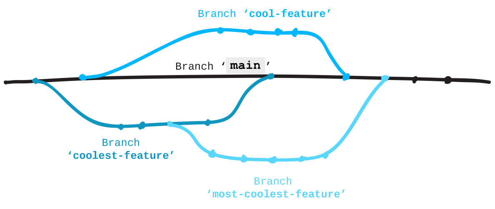

Adicionar um branch para o repositório que você fez fork para trabalhar nas mudanças.
Branches
Repositórios Git usam branches para isolar o trabalho quando eles precisam. É uma prática comum, quando trabalhando em um projeto com outras pessoas, criar um branch antes de fazer alterações. Desta forma, você pode fazer seu trabalho enquanto o branch principal, geralmente chamado de "master", permanece estável. Quando você tiver terminado seu trabalho em um branch, você faz o merge (união) dele com o "master".
O diagrama abaixo mostra como você pode ramificar (lembrado que branch significa "ramo") o seu branch "master", fazer o serviço e então fazer merge destas mudanças com o "master". Você pode até mesmo ramificar ramificações, caso sinta necessidade, o branch "master" não precisa ser a base.
Para ter uma melhor ideia de como os branches funcionam em um projeto, veja este guia do GitHub: guides.github.com/overviews/flow
Páginas do GitHub
O GitHub vai, automaticamente, servir e hospedar arquivos de websites estáticos em branches nomeados "gh-pages". Este serviço gratuito é chamado GitHub Pages. Como o projeto que você fez fork cria um website, seu branch principal é chamado de "gh-pages" ao invés de "master". Todos os repositórios que possuem um branch chamado "gh-pages" com arquivos de um website podem ser encontrados, na versão hospedada, usando o seguinte padrão para o URL:
http://usuariodogithub.github.io/nomedorepositorio
Criar um branch
Quando você cria um branch, o Git copia todos os arquivos em que você está trabalhando e os coloca no novo branch que você acabou de criar.
Enquanto ainda dentro do seu repositório "patchwork" local, digite git status para ver em qual branch você está no momento. O Git deverá dizer que você está no branch nomeado "gh-pages".
Agora, crie um novo branch e o chame de "add-<usuario>", onde 'usuario' é seu usuário. Por exemplo, "add-diobrando". Branches são sensitivos a letras maiúsculas e minúsculas, portanto nomeie ele exatamente como seu usuário está no GitHub.
git branch <NOMEDOBRANCH>
Agora você possui um branch com novo nome e idêntico ao"gh-pages".
Para ir até este branch para poder trabalhar nele, similar a usar cd para mudar de diretório no terminal, você deve fazer checkout de um branch. Para ir para outro branch:
git checkout <NOMEDOBRANCH>
Passo: Criar um Novo Arquivo
De volta ao editor de texto:
- Crie um novo arquivo chamado de "add-<USUARIO>.txt", onde 'USUARIO' é seu usuário. Por exemplo, "add-diobrando.txt".
- Então, escreva o seu usuário do GitHub nele, isso é tudo, pessoal. Por exemplo, eu escreveria "diobrando".
- Salve este arquivo na pasta 'contributors' em Patchwork Patchwork/contributors/add-seuusuario.txt
- Em seguida, cheque sua alterações (veja abaixo).
Checando
Siga estes passos para checar um projeto:
git status
git add <NOMEDOARQUIVO>
git commit -m "Mensagem do Commit"
Agora faça push de sua alteração para o seu fork no GitHub:
git push origin <NOMEDOBRANCH>
Certifique-se de que você está fazendo push para a "origin", o qual é o endereço do seu fork do GitHub. Se você receber um erro, cheque para ter certeza que você tem seus remotos configurados devidamente com a "origin" apontando para seu fork e a "upstream" apontando para o repositório original: git remote -v
O arquivo NÃO está na pasta contributors
O arquivo deve estar na pasta 'contributors' existente no repositório Patchwork. Se você o colocar em algum outro lugar, simplesmente use o Finder ou o Explorador de Arquivos do Windows para mover seu arquivo para esta pasta. Você pode checar o git status novamente e você verá se encontra ele nas suas mudanças. Prepare e então faça commit de "todas" (-A) as mudanças (adições e deleções) com o comando abaixo.
git add -A
git commit -m "mover arquivo para a pasta contributors'
Nome do branch experado: _____
O nome do branch deve corresponder ao nome do usuário exatamente. Para mudar o nome de seu branc:
git branch -m <NOVONOMEDOBRANCH>
Quando você fizer suas alterações, verifique novamente!
- Você pode criar e ir para um branch com uma linha de código
git checkout -b <NOMEDOBRANCH>- Criar um novo branch
git branch <NOMEDOBRANCH>- Ir para um branch
git checkout <NOMEDOBRANCH>- Lista de branches
git branch- Renomear o branch em que você está
git branch -m <NOVONOMEDOBRANCH>- Verificar em qual branch você está
git status